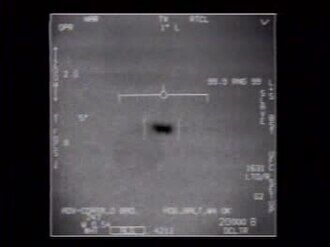

Nimitz Tic Tac encounter
Off San Diego, 2004

In November 2004, USS Princeton radar and F/A-18 pilots, including Cmdr. David Fravor, encountered a fast white object off Baja California. The FLIR1 video was officially released in 2020. Location is approximate. 1,2
Open in the interactive Watcher
Related
- The Tic Tac outperformed any known aircraft Claim
- The Navy UAP videos show real, unidentified objects Claim
- Alex Dietrich Person
- Kevin Day Person
- David Fravor Person
Sources
- USS Nimitz UFO incident Wikipedia
- Statement by the Department of Defense on the Release of Historical Navy Videos U.S. Department of Defense, Apr. 27, 2020